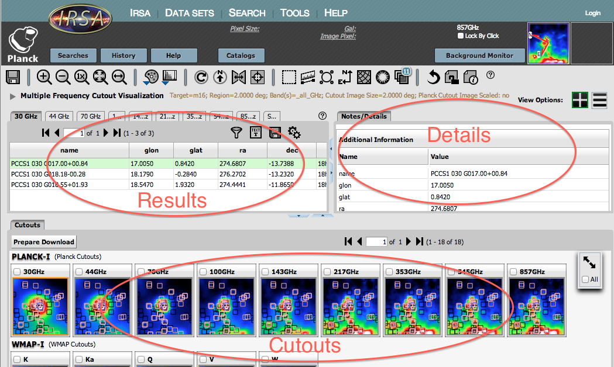
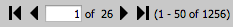
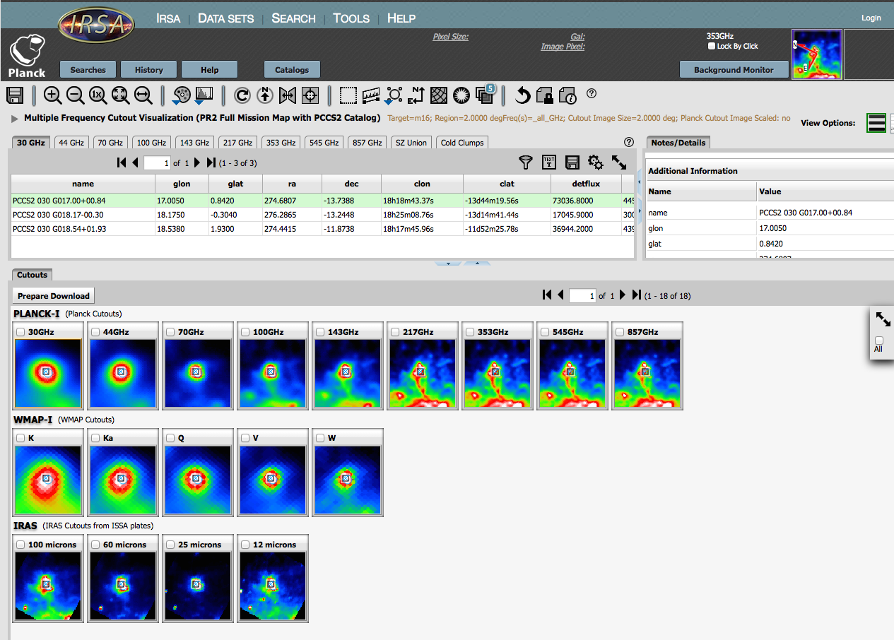
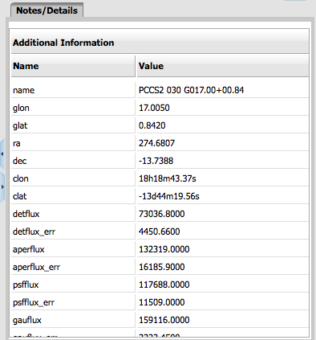
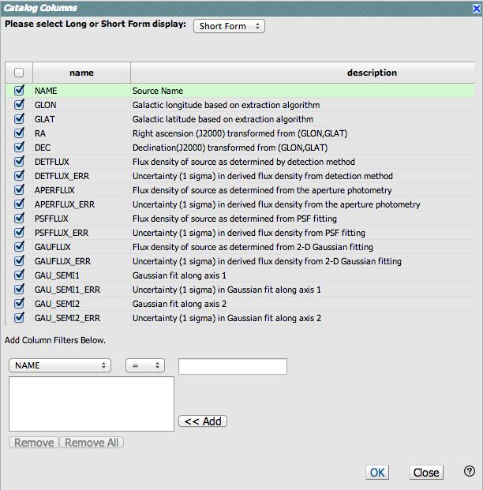

Understanding Your Search Results from the NASA Planck Archive
(NPA)
This section is an overview of what exactly is returned by the NASA
Planck Archive (NPA) search. It explains some of the terminology the
NPA uses and describes some of the common tasks you may want to do.
It then discusses the individual tabs on the archive screen, as well
as how to further refine search results by using filters.
Contents of page/chapter:
+Terminology
+Options Common to Most Search Results
+Table Navigation
+TOI Results
+Images as part of your results
+Details
+Filtering -- Imposing additional filters to get the
most out of your search results
Terminology
Search results are displayed in your browser in several sub-windows,
sometimes referred to as "panes", like "window panes." Here is an
example:

There are three fundamentally different ways to search the NPA, and
for two of them, the search results always look more or less like
this. There is a list of results on the left, details of the results
on the right, and a set of image cutouts on the bottom. TOI searches
look fundamentally different, because the nature of those results are
so very different.
Options Common to Most Search Results
- Dynamic changes
- Clicking on things in one pane often changes things in another
pane. For example, clicking on a row in the search results pane
changes the content of the details tab in the coverage pane, and often
changes the set of images in the cutouts pane. When catalogs are
overlaid, similar interactivity is available -- clicking on a row in
the catalog changes the source color in the source overlays on all of
the images, and clicking on a source overlay in any of the images
highlights the corresponding row in the catalog.
- Images
- Move your mouse over any image that is loaded into the viewer.
Details about the image and, specifically, the pixel beneath your
mouse cursor, appear along the top of the window with a variety of
useful items. Much more information about working with images is
provided in the Visualization
section.
- Changing the size of the window or columns
- You can resize the boundary between window panes to resize the
window pane or individual columns. Click and drag the blue
double-sided arrows in the middle of the pane boundary. You can resize
columns by dragging the boundary between columns.
- Tables
- Tables are handled similarly throughout the NPA; see the next
section for more details about the icons that appear on the top of a
table, and how to navigate through large tables. To sort tables,
click on the header of any column. Click it again to sort in reverse
order, and click a third time to return to the original view.
Note that, by default, position searches return a table of Planck
sources, but the table is not sorted by distance of a source
from the submitted coordinate. To do that, you must click on
the column labeled "dist". The "dist" and the associated "angle" (for
Position Angle) columns are appended to the catalog column list so are
found at the far right. Scrolling is usually necessary to see these
columns.
Table Navigation
In the tabs in the results table (or in any other catalog tab),
similar symbols appear:
In the example, the first thing on the left is a "Prepare Download"
button. This button may not always appear, depending on what, exactly
you are looking at. Clicking on this button starts the packaging
process for downloading data.
Next, there is this: . This tells us some
important things. In this example, 1256 sources met the search
criteria, and the first 50 are being displayed. The black arrows plus
the page number allow you to navigate among these 'pages' of 50
sources each. Note that the entire set of results (not just the 50
rows you are currently viewing) can be sorted alphabetically by
clicking on any column's name. (Note also that in the plotting and
overlay features described elsewhere in this document, all the sources
in the catalog are plotted on the images you have, not just the 50
shown in the first page.)
Going from left to right along the top of the catalog tab, the next
icon represents a filter:  Filters are a
very powerful way of exploring the catalog data, and as such
are summarized in a separate section below.
The next icon is
Filters are a
very powerful way of exploring the catalog data, and as such
are summarized in a separate section below.
The next icon is  -- clicking on this
changes the table display into a text display. The icon then changes
to
-- clicking on this
changes the table display into a text display. The icon then changes
to  -- click this again to return to the
default table view.
-- click this again to return to the
default table view.
The next icon is  which is "Save" -- this
is how you may save the whole catalog (NOTE: the WHOLE TABLE, not
just the rows shown) to your own local disk. It will save it as
an IPAC table file, which is basically ASCII text
with headers explaining the type of data in each column, separated by
vertical bars. Depending on what table, exactly, you are saving, the
the file may be called "GatorQuery.tbl" because, under the hood, the
software is talking to the IRSA General Catalog Query Engine, powered by
Gator.
which is "Save" -- this
is how you may save the whole catalog (NOTE: the WHOLE TABLE, not
just the rows shown) to your own local disk. It will save it as
an IPAC table file, which is basically ASCII text
with headers explaining the type of data in each column, separated by
vertical bars. Depending on what table, exactly, you are saving, the
the file may be called "GatorQuery.tbl" because, under the hood, the
software is talking to the IRSA General Catalog Query Engine, powered by
Gator.
The next option on the top of the catalog tab is this:  . Clicking on this icon brings up options
for the table, e.g., how many rows are displayed per page, and which
columns are shown. By default, all columns are shown. The default page
size is 50 rows. Note that expanding the page size to numbers much
greater than 50 may result in a substantial performance degradation
(e.g., your browser will appear to freeze or not appear to be doing
anything while it manages and renders the large table).
. Clicking on this icon brings up options
for the table, e.g., how many rows are displayed per page, and which
columns are shown. By default, all columns are shown. The default page
size is 50 rows. Note that expanding the page size to numbers much
greater than 50 may result in a substantial performance degradation
(e.g., your browser will appear to freeze or not appear to be doing
anything while it manages and renders the large table).
Note also that if you resize columns, and then go and add new columns,
the original columns are resized back to their defaults after the new
columns are added.
Finally, when your mouse is in the catalog window pane, you may see this
as the last option on the top of the catalog tab:  . Clicking on this expands the catalog
window pane to take up the entire browser window. To return to the
prior view, click on "Close" in the upper left.
. Clicking on this expands the catalog
window pane to take up the entire browser window. To return to the
prior view, click on "Close" in the upper left.
TOI results
A TOI search returns a list of the MJDs (modified Julian Dates) during
which your source was observed by Planck, along with the number of TOI
samples obtained on each day. Because this is the primary search
result for a TOI search, the result is one tab per selected frequency
with the list of dates and sample counts. Your search criteria are
listed above the tabs.
Each MJD's data can be individually selected for download or map
generation by clicking on the box to the left of each entry. You can
also select all available data by clicking in the box that appears on
the column header (above all the checkboxes). In the example here,
we've selected the first four continguous MJDs which are from the same
pass. The remaining dates are from the subsequent pass roughly
six months later.

For more on downloading the TOI data directly, please see the Download section.
Running Minimap on the TOI data
The other button available on the TOI Search Results page produces an
image from the selected TOIs using the Minimap algorithm. Minimap
creates a simple sky map from the TOI samples, one in which each
weighted TOI signal is assigned to the nearest output pixel, with no
interpolation. The pixel value is the unweighted average of the
values of all the selected TOI samples for which the detector
pointing direction lies within the pixel. It is assumed that offsets
due to 1/f noise have already been removed from the TOIs. The map
projection is gnomonic, centered on the search direction, and the
pixel size is 2 arcmin. Unsampled pixels are marked by a NaN value.
Clicking on this "Run Minimap" button brings up a simple confirmation
dialog box listing the rows (starting at 0) that you selected in the
MJD list. The only options here are 'OK" to proceed with the image
generation or 'Cancel'.

After processing, the resulting Minimap image is displayed in a new
tab labeled 'Minimap', which you can interact with like any other
image here (see the Visualization
section).

Your original search results are still accessible via a tab
that is tagged by the Planck band, in our example '70 GHz'.
During the download dialog, you also have the option of rerunning
Minimap again with a different selection of dates. If you do this,
then this new map is the one that you will download, i.e.,
not the version displayed in the tab.
Images as part of your results
Once a search by wavelength ("browse catalogs") or by position
("cutout visualization") is complete, the lower portion of the NPA
window is populated with three rows of images. The top row consists of
Planck images from each frequency band, with frequency increasing from
left to right. The next two rows are WMAP and IRAS, respectively. These
images contain markers showing the positions of Planck catalog sources
from the frequency range selected.

The cutout size is user-selectable betweeen 10 arcminutes and 2
degrees. These cutouts do not have the cosmic microwave background
subtracted out. All Planck downloads will come with a set of Planck
beams (one per frequency) that correspond to the HEALPIX pixel
nearest to the search position.
All the images are FITS images, and can be manipulated using the
tools described in the Visualization
section. Downloading the images is described in the Downloads section.
(Note: For Early Release-based visualizations, these images
appear as a grey background and contain a mosaic of JPEG images for
all the Planck sources found within this zone. The mosaics are
constructed from maps with a model for the cosmic microwave background
subtracted. The individual "postage stamp" Planck JPEGs are each four
times the beam FWHM on a side at 33 GHz. However, for each source,
data is included only for a region corresponding to four times the
beam FWHM at the corresponding frequency. Thus, those regions with
data in the postage stamps will vary in size by a factor of 7 between
30 and 857 GHz.)
The Details Pane
: Getting More Information
on a Row In Your Search Results from the NASA Planck Archive
After you have searched the archive and
explored some of the tabs in your search results, you may be
interested in understanding the additional information that appears in
the Details pane on the right side of your screen when a row in the
table (for any tab) is highlighted.
The contents of the Details pane change according to which results tab
you have in the foreground and which row you have selected. Here is an
example:

From the tab, click on any row (note: no need to select the checkbox
on the far left of the row). The row becomes highlighted in green. The
details pane on the right side of the window changes accordingly.
The Details tab that appears can contain notes about the selected
source. This typically gives association between a Planck source
and a source detected in other catalogs, such as WMAP, GB6 or IRAS.
After a positional search, the top portion of your NPA window will,
by default, contain tabs for each of the catalogs based on
multi-frequency detection algorithms and one for each of the nine
Planck frequency ranges in the release. You should make the browser
wide enough to see all the different tabs in the result panel. You can
also drag the blue triangles on the window pane boundary to adjust the
widths of the panels.
Clicking each tab reveals the table of Planck sources for that catalog
within the designated search zone. The images displayed in the lower
portion of the NPA window will change depending on which source is
selected. The selected source is highlighted in green in the table of
search results.
You can find the full description of the columns present in the
associated documentation:
There are some additional columns available:
- clon, clat
- RA, DEC in sexigesimal
- iras100_bg
- IRAS 100 micron background in MegaJy/sr
- dist
- distance in arcsec between the input coordinate and the Planck source
- angle
- position angle of separation in degrees East of North
Following the positional search, Planck images of the selected entry
in the search results table will be displayed in the lower portion of
the NPA window. The entry highlighted in green is centered in each
wavelength image field of view. These images and their associated
tools are described in the Visualization section.
Filtering -- Imposing additional
filters to get the most out of your search results
In order to quickly sort through what information appears in the
results tab and to examine the source you care about, filters
are a very powerful tool. The filters work the same way whether
working on search results from the main window or on catalog search
results.
This icon represents a filter: Click on
this icon in order to start the process of adding filters. A text
entry box appears above each of the current table columns, with a
small version of the filter icon corresponding to that row on the far
left. You can type operators and values in these boxes -- hit return
after typing or click in another box to implement the filter. For
fields with a limited set of choices, instead of a text entry box, a
filter icon will appear; click on it to select from the available
choices. As an example, to show only those sources with declination
above a certain value (say, 31 degrees), type "> 31" in the box
above the "dec" column. Or, if you have searched on a position and
would like to view only the Planck sources with aperture flux
densities greater than 1000.0 mJy, enter '> 1000' in the text box
that appears above the 'aperflux' column.
After you impose a filter, then the number of rows in the table is
restricted according to the rules you have specified, and the
"filters" icon on the top right of the table pane has changed to
remind you that there has been a filter applied, in this case just one
filter:  . To clear the filters, click on
the cancel filters icon (which also appears after you impose filters):
. To clear the filters, click on
the cancel filters icon (which also appears after you impose filters):
 .
.
Note that the filters are logically "AND"ed together -- it will impose
this AND that AND this other restriction. You can relatively easily
restrict things such that no data are left; if that is the case, you
will get "There are no data to display." You can then cancel all the
filters at once via the cancel filters icon (), or remove them individually by hand by
editing the filter boxes at the top of each column, just as you did to
impose the filters.
The available logical operators are :
- = which means 'equal to' (exactly!), e.g., the parameter on
which you are querying (the column headers as shown) is exactly equal to
this value you are specifying.
- > which means 'greater than'
- < which mean 'less than'
- != which means 'not equal to' (exactly!)
- >= which means 'greater than or equal to'
- <= which means 'less than or equal to'
- IN which means 'included within this list', e.g., the
parameter on which you are querying (such as "Bandpass") is included
within the list you are specifying (if the column filter is free-form
text, type "value1,value2" and it will give you rows that have value1
or value2).
- LIKE which means 'resembles the text that is entered', e.g., the text
resembles the text that you type in the box.
Note that each tab has its own, independent filter. If you want to
see the objects with more than 3 observations in 30 GHz, 44 GHz, and
857 GHz, you'll need to apply the filter three different times. You
can add additional filters to further restrict your list of
sources.
For all-sky searches, you can impose filters from the initial search
page. By clicking on "Set Column Selections and Filters", you get a
popup that fundamentally works the same way:

From this interface, you can pick whether you want fewer columns
(short form) or more columns (long form), and then it presents you
with the list of column names.
Near the bottom of the window is where you actually impose filters.
Select your column name, your operator, and your value. Once you have
these three things configured to your liking, be sure to hit the
"<< Add" button to apply it. The box to the left of that button
keeps track of all the constraints you apply -- to apply multiple
filters, just keep adding filters for each parameter you want to
constrain.
It's worth reiterating: applying filters either intially or after a
search can result in no sources left -- because the filters are
logically "AND"ed together -- it will impose this AND that AND this
other restriction. You can relatively easily restrict things such that
no data are left.